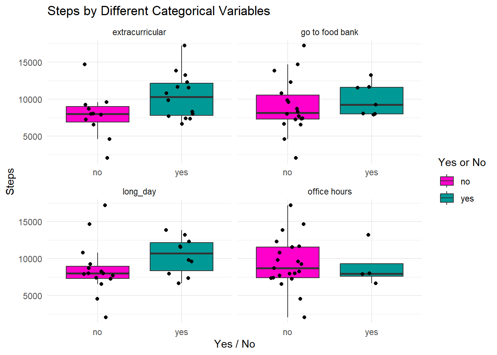

[I would be comparing my steps between long and short days as well as comparing my steps with the other variables I chose (extracurriculars, office hours…). The groups that I am comparing are informative, because I believe I take more steps on longer days as I have more classes or extracurricular on campus.]
b.
data <-read_csv("C:/Users/tuthi/OneDrive/Documents/github/ENVS-193DS_homework-03/data/data_collection.csv")
Rows: 25 Columns: 7
── Column specification ────────────────────────────────────────────────────────
Delimiter: ","
chr (5): Date, long day? (Tues, Thurs), office hours, extracurricular, go to...
dbl (2): steps, screen time
ℹ Use `spec()` to retrieve the full column specification for this data.
ℹ Specify the column types or set `show_col_types = FALSE` to quiet this message.
long_day <- data colnames(long_day)[colnames(long_day) =="long day? (Tues, Thurs)"] <-"long_day"plot_data <- long_day |>select(steps, long_day, extracurricular, 'office hours', 'go to food bank') |>pivot_longer(cols =-steps,names_to ="category",values_to ="yes_no" )# Plot with facets for each categoryggplot(plot_data, aes(x = yes_no, y = steps, fill = yes_no)) +geom_boxplot(outlier.shape =NA) +geom_jitter(aes(color = yes_no),width =0.2, height =0, size =1.5, color ="black", show.legend =FALSE ) +facet_wrap(~ category, scales ="free_x") +labs(title ="Steps by Different Categorical Variables",x ="Yes / No",y ="Steps",fill ="Yes or No" ) +scale_fill_manual(values =c("yes"="#009996", "no"="#FF00CC")) +scale_color_manual(values =c("yes"="#009996", "no"="#FF00CC")) +theme_minimal()
Warning: No shared levels found between `names(values)` of the manual scale and the
data's colour values.

screen_time <- data screen_time <- screen_time |>rename(screen_time_value =`screen time`) |>mutate(screen_time_value =as.numeric(screen_time_value))ggplot(screen_time, aes(x = screen_time_value, y = steps)) +geom_point(alpha =0.6, color ="darkgreen", size =2) +labs(title ="Screen Time vs Steps",x ="Screen Time (hrs)",y ="Steps" ) +theme_minimal()
c.
[The first figure displays the jitterplots for the four categorical data (extracurricular, go to food bank, long_day, office hours). For each categorical data, the yes or no indicates whether that category was available that day. The second figure shows the screen time on the x-axis and steps on the y-axis, with each point being a day.]
[The authors use ANOVA and a Mann-Whitney U test. The main research question is whether differential habitat use provided significant separation between the two panda species.]
knitr::include_graphics("data_image.jpg")
b.
[The table does a great job to show ANOVA (tells us how much the means of the two groups differ relative to the variation within the group) for the habitat variables, by showing which habitat variables have a statistical difference between the two species (via F-statistic and p-value). It also lists out the Mann-Whitney U-statistic (ranks data and compares distributions between the two groups) and p-value, which indicates which habitat variables have a significant difference between two species.]
c.
[For this table, the authors use italics for the F statistic for ANOVA and U statistic for Mann-U Whitney as well as for the p-values. By doing italics, it draws the readers’ attention to these values.]
d.
[A suggestion that I would have is for the authors is to break the table up to ANOVA and Mann-Whitney U-Test. I would suggest this because there’s a lot of data in this current table, which would make it hard to look at. Another suggestion I would have is to organize the habitat variables that are significantly different between the two panda species and the ones that are not when you have broken up ANOVA and Mann-Whitney U-Test. The authors can list the habitat variables that were significantly different first, then list the rest of the habitat variables that were not significantly different. This just helps make the data less intimidating and make the data look more organized. The final table would break up into 2 tables, with ANOVA in one and Mann-Whitney U Test in another. The habitat variables with a significant difference between the two species would be listed first, then followed by the habitat variables with no significant difference between the two species would be listed second.]